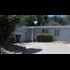

<!DOCTYPE html>
<html lang="en">
 <head>
  <meta charset="utf-8"/>
  <title>
   Navy SEAL accused of molesting girl on camera, raping a woman and hoarding a stash of child porn
  </title>
  <meta content="Post on /v/Pizzagate archived on 2017-04-23 by MeAgain." name="description"/>
  <meta content="Navy SEAL accused of molesting girl on camera, raping a woman and hoarding a stash of child porn" property="og:title"/>
  <meta content="Post on /v/Pizzagate archived on 2017-04-23 by MeAgain." property="og:description"/>
  <link href="../../page.css" rel="stylesheet"/>
  <meta content="https://voat.pizzagate.hackliberty.org/thumbnails/cd/1c/cd1cb7b0-27b2-4f2d-8e19-a25d9d1664c8.jpg" property="og:image"/>
  <meta content="https://voat.pizzagate.hackliberty.org/v/pizzagate/1812909.html" property="og:url"/>
  <meta content="width=device-width, initial-scale=1" name="viewport"/>
  <link href="https://voat.pizzagate.hackliberty.org/1812909.html" rel="canonical"/>
  <meta content="article" property="og:type"/>
  <meta content="Voat /v/Pizzagate Archive" property="og:site_name"/>
  <meta content="en_US" property="og:locale"/>
  <meta content="summary_large_image" name="twitter:card"/>
  <meta content="Navy SEAL accused of molesting girl on camera, raping a woman and hoarding a stash of child porn" name="twitter:title"/>
  <meta content="Post on /v/Pizzagate archived on 2017-04-23 by MeAgain." name="twitter:description"/>
  <meta content="https://voat.pizzagate.hackliberty.org/thumbnails/cd/1c/cd1cb7b0-27b2-4f2d-8e19-a25d9d1664c8.jpg" name="twitter:image"/>
 </head>
</html>
<body class="dark">
 <div id="container">
  <!-- array (
  'submissionid' => 1812909,
  'creationDate' => '2017-04-23 12:50:37',
  'domain' => 'latimes.com',
  'formattedContent' => NULL,
  'isAdult' => 0,
  'isAnonymized' => 0,
  'subverse' => 'pizzagate',
  'thumbnail' => 'cd1cb7b0-27b2-4f2d-8e19-a25d9d1664c8.jpg',
  'title' => 'Navy SEAL accused of molesting girl on camera, raping a woman and hoarding a stash of child porn',
  'url' => 'http://www.latimes.com/local/lanow/la-me-navy-seal-20170422-story.html',
  'userName' => 'MeAgain',
  'archivedLink' => NULL,
  'archivedDomain' => NULL,
  'isDeleted' => 0,
) -->
  <div style="text-align:center; font-size:24px; font-weight:bold;">
   <a href="../../index.html" style="text-decoration: none; color: inherit;">
    Voat /v/Pizzagate Archive
   </a>
  </div>
  <div class="content" role="main">
   <div class="sitetable linklisting" id="siteTable">
    <div class="submission id-1812909 link type-text" id="submission-1812909">
     <a name="submissionTop">
     </a>
     <p class="parent">
     </p>
     <a class="thumbnail may-blank" href="http://www.latimes.com/local/lanow/la-me-navy-seal-20170422-story.html" target="_self">
      
     </a>
     <div class="entry unvoted">
      <p class="title">
       <a class="title may-blank" href="http://www.latimes.com/local/lanow/la-me-navy-seal-20170422-story.html" tabindex="1" target="_self" title="Navy SEAL accused of molesting girl on camera, raping a woman and hoarding a stash of child porn">
        Navy SEAL accused of molesting girl on camera, raping a woman and hoarding a stash of child porn
       </a>
       <span class="domain">
        (
        <a href="https://archive.searchvoat.co/search.php?d=latimes.com">
         latimes.com
        </a>
        )
       </span>
      </p>
      <p class="tagline">
       submitted
       <time datetime="2017-04-23T12:50:37+00:00" title="04/23/2017 12:50:37 PM">
        2017-04-23T12:50:37
       </time>
       by
       <span class="userattrs">
        <a class="author may-blank" href="https://archive.searchvoat.co/search.php?u=MeAgain">
         MeAgain
        </a>
       </span>
      </p>
      <ul class="flat-list buttons">
       <li class="first">
        <a class="comments may-blank" href="https://archive.searchvoat.co/v/pizzagate/1812909" rel="nofollow">
         2 comments
        </a>
       </li>
      </ul>
     </div>
     <div class="child">
     </div>
     <div class="clearleft">
     </div>
    </div>
    <div class="clearleft">
    </div>
   </div>
   <div class="horizontal-line">
   </div>
   <div class="commentarea">
    <div class="sitetable nestedlisting" id="siteTable">
     <div class="child id-8877830 comment even" style="">
      <div class="entry unvoted">
       <div class="noncollapsed" id="8877830" style=";">
        <p class="tagline">
         <a class="author may-blank" href="https://archive.searchvoat.co/search.php?u=PizzagateBot">
          PizzagateBot
         </a>
         <span class="userattrs">
         </span>
         <time datetime="2017-04-23T20:19:01+00:00" title="4/23/2017 8:19:01 PM">
          2017-04-23T20:19:01
         </time>
        </p>
        <div class="usertext-body may-blank-within" id="commentContent-8877830">
         <div class="md">
          <p>
           <p>
            Hi! I created the following archive link(s) for this voat submission:
           </p>
           <table>
            <thead>
             <tr>
              <th>
               OriginLink
              </th>
              <th>
               ArchiveOrg
              </th>
              <th>
               ArchiveIS
              </th>
              <th>
               WARCLinkSHA256
              </th>
             </tr>
            </thead>
            <tbody>
             <tr>
              <td>
               <a href="https://archive.searchvoat.co/v/pizzagate/1812909">
                https://voat.co/v/pizzagate/1812909
               </a>
              </td>
              <td>
               <a href="https://web.archive.org/web/20170423201856/https://voat.co/v/pizzagate/1812909">
                archive.org link
               </a>
              </td>
              <td>
               <a href="">
                archive.is link
               </a>
              </td>
              <td>
               <a href="https://archive.org/download/1812909-20170423201854.warc.gz/1812909-20170423201854.warc.gz">
                58e5dabfdb78dfbf712592dec16f5fa31b1fd01c2db37900c4f695e6f9a775eb
               </a>
              </td>
             </tr>
             <tr>
              <td>
               <a href="http://www.latimes.com/local/lanow/la-me-navy-seal-20170422-story.html">
                http://www.latimes.com/local/lanow/la-me-navy-seal-20170422-story.html
               </a>
              </td>
              <td>
               <a href="https://web.archive.org/web/20170423201858/http://www.latimes.com/local/lanow/la-me-navy-seal-20170422-story.html">
                archive.org link
               </a>
              </td>
              <td>
               Archive.is Refused Archive
              </td>
              <td>
              </td>
             </tr>
            </tbody>
           </table>
           <p>
            WARC files are created with
            <a href="https://webrecorder.io/">
             https://webrecorder.io/
            </a>
            <br/>
            WARCs can be viewed offline with WARC replay tools like
            <a href="https://github.com/webrecorder/webrecorderplayer-electron">
             https://github.com/webrecorder/webrecorderplayer-electron
            </a>
            <br/>
            Final WARC will be created after 1 week from posting.
            <br/>
            Let me know if you would like to see a !RemindMe function.
           </p>
          </p>
         </div>
        </div>
        <ul class="flat-list buttons">
         <li class="first">
          <a class="bylink" href="https://archive.searchvoat.co/v/pizzagate/1812909/8877830" rel="nofollow">
           link
          </a>
         </li>
        </ul>
       </div>
      </div>
     </div>
     <div class="child id-8874317 comment even" style="">
      <div class="entry unvoted">
       <div class="noncollapsed" id="8874317" style=";">
        <p class="tagline">
         <a class="author may-blank" href="https://archive.searchvoat.co/search.php?u=derram">
          derram
         </a>
         <span class="userattrs">
         </span>
         <time datetime="2017-04-23T13:00:06+00:00" title="4/23/2017 1:00:06 PM">
          2017-04-23T13:00:06
         </time>
        </p>
        <div class="usertext-body may-blank-within" id="commentContent-8874317">
         <div class="md">
          <p>
           <p>
            <a href="https://archive.is/IZHAy">
             https://archive.is/IZHAy
            </a>
            |
            <a href="https://vgy.me/ounDNC.png">
             https://vgy.me/ounDNC.png
            </a>
            :
           </p>
           <blockquote>
            <p>
             Navy SEAL accused of molesting girl on camera, raping a woman and hoarding a stash of child porn - LA Times
            </p>
           </blockquote>
           <p>
            'On March 24, a military judge found Chief Special Warfare Operator Stephen Varanko III guilty of sexual harassment and battery stemming from an adulterous relationship. '
           </p>
           <p>
            'In disclosure forms Seerden filed in federal court, the SEAL claimed to be divorced and without children. '
           </p>
           <p>
            'Navy SEAL Petty Officer Second Class Theo Andrew Krah was arrested June 15 in connection with the beating and stabbing death of a man following an altercation on the Santa Monica Pier. '
           </p>
           <p>
            'Along with scrapping a SEAL’s security clearance, that’s a step special warfare commanders often take because it is not considered a form of punishment under military law. '
           </p>
           <p>
            'Zachary Keating, spokesman for Naval Special Warfare Group One. '
           </p>
           <p>
            <a href="https://vgy.me/Kp7d5V.jpg">
             This has been an automated message.
            </a>
           </p>
          </p>
         </div>
        </div>
        <ul class="flat-list buttons">
         <li class="first">
          <a class="bylink" href="https://archive.searchvoat.co/v/pizzagate/1812909/8874317" rel="nofollow">
           link
          </a>
         </li>
        </ul>
       </div>
      </div>
     </div>
    </div>
   </div>
  </div>
 </div>
 <div class="footer-container">
 </div>
</body>
